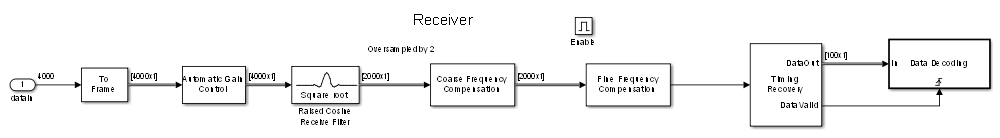
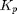
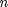
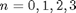
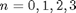
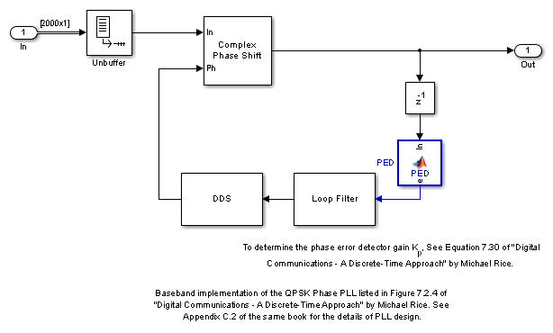
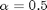
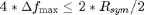

QPSK Receiver with USRP® Hardware
This model shows how to use the Universal Software Radio Peripheral® (USRP®) device with Simulink® to implement a QPSK receiver. The receiver addresses practical issues in wireless communications, e.g. carrier frequency and phase offset, timing offset and frame synchronization. This model receives the signal sent by the QPSK Transmitter with USRP® Hardware model. The receiver demodulates the received symbols and outputs a simple message to the MATLAB® command line.
In order to run this model, you need to ensure that the specified center frequency of the SDRu Receiver is within the acceptable range of your USRP® daughter board. Please refer to Getting Started for details on configuring your host computer to work with the SDRu Receiver block.
Contents
Overview
This model performs all processing at complex baseband to handle a time-varying frequency offset, a time-varying symbol delay, and Gaussian noise. To cope with the above-mentioned impairments, this example provides a reference design of a practical digital receiver, which includes FFT-based coarse frequency compensation, PLL-based fine frequency compensation, timing recovery with fixed-rate resampling and bit stuffing/skipping, frame synchronization, and phase ambiguity resolution. The example implements some key algorithms in MATLAB, emphasizing textual algorithm expression over graphical algorithm expression. For example, the model uses MATLAB to implement some key processing in the PLL for fine frequency compensation and timing recovery, and some data extraction/control functionalities.
Structure of the Example
The top-level structure of the model is shown in the following figure.

The detailed structures of the QPSK Receiver subsystem are illustrated in the following figure.
The components are further described in the following sections.
- Raised Cosine Receive Filter - Uses a rolloff factor of 0.5, and downsamples the input signal by two
- Coarse Frequency Compensation - Estimates an approximate frequency offset of the received signal and corrects it
- Fine Frequency Compensation - Compensates for the residual frequency offset and the phase offset
- Timing Recovery - Resamples the input signal according to a recovered timing strobe so that symbol decisions are made at the optimum sampling instants
- Data Decoding - Aligns the frame boundaries, resolves the phase ambiguity caused by the Fine Frequency Compensation subsystem, demodulates the signal, and decodes the text message
Receiver
Raised Cosine Receive Filter
The Raised Cosine Receive Filter downsamples the input signal by a factor of two, with a rolloff factor of 0.5. It provides matched filtering for the transmitted waveform.
AGC
The phase error detector gain  of the phase and timing error detectors is proportional to the received signal amplitude and the average symbol energy. To ensure an optimum loop design, the signal amplitude at the inputs of the carrier recovery and timing recovery loops must be stable. The AGC ensures that the amplitude of the input of the Coarse Frequency Compensation subsystem is 1/Upsampling Factor , so that the equivalent gains of the phase and timing error detectors keep constant over time. The AGC is placed before the Raised Cosine Receive Filter so that the signal amplitude can be measured with an oversampling factor of four, thus improving the accuracy of the estimate. You can refer to Chapter 7.2.2 and Chapter 8.4.1 of [ 1 ] for details on how to design the phase detector gain . The AGC subsystem updates its compensation gain for each ten QPSK symbols. So that the AGC can smooth out the variation of signal amplitude.
Coarse Frequency Compensation
The Coarse Frequency Compensation subsystem corrects the input signal with a rough estimate of the frequency offset. The following diagram shows the Find Frequency Offset subsystem in the Coarse Frequency Compensation subsystem. This subsystem uses a baseband QPSK signal with a designated phase index , frequency offset  and phase offset
and phase offset  expressed as
expressed as  , . First, the subsystem raises the input signal to the power of four to obtain
, . First, the subsystem raises the input signal to the power of four to obtain  , which is not a function of the QPSK modulation. Then it performs an FFT on the modulation-independent signal to estimate the tone at four times the frequency offset. After dividing the estimate by four, the Phase/Frequency Offset library block corrects the frequency offset. There is usually a residual frequency offset even after the coarse frequency compensation, which would cause a slow rotation of the constellation. The Fine Frequency Compensation subsystem compensates for this residual frequency.
, which is not a function of the QPSK modulation. Then it performs an FFT on the modulation-independent signal to estimate the tone at four times the frequency offset. After dividing the estimate by four, the Phase/Frequency Offset library block corrects the frequency offset. There is usually a residual frequency offset even after the coarse frequency compensation, which would cause a slow rotation of the constellation. The Fine Frequency Compensation subsystem compensates for this residual frequency.


Fine Frequency Compensation
The Fine Frequency Compensation subsystem implements a phase-locked loop (PLL), described in Chapter 7 of [ 1 ], to track the residual frequency offset and the phase offset in the input signal, as shown in the following figure. The PLL uses a Direct Digital Synthesizer (DDS) to generate the compensating phase that offsets the residual frequency and phase offsets. The phase offset estimate from DDS is the integral of the phase error output of the Loop Filter.
A maximum likelihood Phase Error Detector (PED) , described in Chapter 7.2.2 of [ 1 ], generates the phase error. A tunable proportional-plus-integral Loop Filter , described in Appendix C.2 of [ 1 ] filters the error signal and then feeds it into the DDS. The Loop Bandwidth (normalized by the sample rate) and the Loop Damping Factor are tunable for the Loop Filter. The default normalized loop bandwidth is set to 0.06 and the default damping factor is set to 2.5 (over damping) so that the PLL quickly locks to the intended phase while introducing little phase noise.
Timing Recovery
The Timing Recovery subsystem implements a PLL, described in Chapter 8 of [ 1 ], to correct the timing error in the received signal. The input of the Timing Recovery subsystem is oversampled by two. On average the Timing Recovery subsystem generates one output sample for every two input samples. The NCO Control subsystem implements a decrementing modulo-1 counter described in Chapter 8.4.3 of [ 1 ] to generate the control signal for the Modified Buffer to select the interpolants of the Interpolation Filter. This control signal also enables the Timing Error Detector (TED), so that it calculates the timing errors at the correct timing instants. The NCO Control subsystem updates the timing difference for the Interpolation Filter , generating interpolants at optimum sampling instants. The Interpolation Filter is a Farrow parabolic filter with  as described in Chapter 8.4.2 of [ 1 ]. The filter uses an  of 0.5 so that all the filter coefficients become only 1, -1/2 and 3/2, which significantly simplifies the interpolator structure. Based on the interpolants, timing errors are generated by a zero-crossing Timing Error Detector as described in Chapter 8.4.1 of [ 1 ], filtered by a tunable proportional-plus-integral Loop Filter as described in Appendix C.2 of [ 1 ], and fed into the NCO Control for a timing difference update. The Loop Bandwidth (normalized by the sample rate) and Loop Damping Factor are tunable for the Loop Filter. The default normalized loop bandwidth is set to 0.01 and the default damping factor is set to unity (critical damping) so that the PLL quickly locks to the correct timing while introducing little phase noise.
of 0.5 so that all the filter coefficients become only 1, -1/2 and 3/2, which significantly simplifies the interpolator structure. Based on the interpolants, timing errors are generated by a zero-crossing Timing Error Detector as described in Chapter 8.4.1 of [ 1 ], filtered by a tunable proportional-plus-integral Loop Filter as described in Appendix C.2 of [ 1 ], and fed into the NCO Control for a timing difference update. The Loop Bandwidth (normalized by the sample rate) and Loop Damping Factor are tunable for the Loop Filter. The default normalized loop bandwidth is set to 0.01 and the default damping factor is set to unity (critical damping) so that the PLL quickly locks to the correct timing while introducing little phase noise.
When the timing error (delay) reaches symbol boundaries, there will be one extra or missing interpolant in the output. The TED implements bit stuffing/skipping to handle the extra/missing interpolants. You can refer to Chapter 8.4.4 of [ 1 ] for details of bit stuffing/skipping.

The timing recovery loop normally generates 100 QPSK symbols per frame, one output symbol for every two input samples. It also outputs a timing strobe that runs at the input sample rate. Under normal circumstances, the strobe value is simply a sequence of alternating ones and zeros. However, this occurs only when the relative delay between Tx and Rx contains some fractional part of one symbol period and the integer part of the delay (in symbols) remains constant. If the integer part of the relative delay changes, the strobe value can have two consecutive zeros or two consecutive ones. In that case, the timing recovery loop generates 99 or 101 QPSK output symbols per frame. However, the downstream processing must use a frame size of 100 symbols, which is ensured by the Modified Buffer subsystem.
The Modified Buffer subsystem uses the strobe to fill up a delay line with properly sampled QPSK symbols. As each QPSK symbol is added to the delay line, a counter increments the number of symbols in the line. At each sampling instant, the delay line outputs a frame of size 100 to the Data Decoding subsystem. However, the Data Decoding subsystem runs on its received data only when its enable signal goes high. This occurs when both the counter value reaches 100 and the strobe is high, i.e. each time exactly 100 valid QPSK symbols are present at the Modified Buffer.
Data Decoding
The Data Decoding subsystem performs frame synchronization, phase ambiguity resolution, demodulation and text message decoding. The subsystem uses a QPSK-modulated Barker code, generated by the Bits Generation subsystem, to correlate against the received QPSK symbols and achieve frame synchronization. The Compute Delay subsystem correlates the data input with the QPSK modulated Barker code, and uses the index of the peak amplitude to find the delay.
The carrier phase PLL of the Fine Frequency Compensation subsystem may lock to the unmodulated carrier with a phase shift of 0, 90, 180, or 270 degrees, which can cause a phase ambiguity. For details of phase ambiguity and its resolution, please refer to Chapter 7.2.2 and 7.7 in [ 1 ]. The Phase Offset Estimator subsystem determines this phase shift. The Phase Ambiguity Correction & Demodulation subsystem rotates the input signal by the estimated phase offset and demodulates the corrected data. The payload bits are descrambled, and the first 105 payload bits are extracted and stored in a workspace variable. All the stored bits are converted to characters and printed out at the MATLAB command window while the simulation is running.
Running the Example
Before running this model, first start the QPSK Transmitter with USRP® Hardware model.
This receiver model is capable to handle a frequency offset of 12.5kHz between the transmitter and receiver boards. However, when the frequency offset exceeds this range, the Coarse Frequency Compensation subsystem cannot accurately determine the offset of the received signal, which is critical for correct timing recovery and data decoding. We encourage you to run the companion frequency calibration transmitter and receiver models with your USRP® transmitter and receiver hardware to roughly determine the frequency offset between your two USRP® boards. With that frequency offset value, you can manually adjust the Center frequency of the SDRu Receiver subsystem in the receiver model to ensure a residual frequency offset that the model can track.
If the received signal is too weak or too strong, you might notice some garbled message output. In that case, You can change the gain of either the SDRu Transmitter subsystem in the QPSK Transmitter with USRP® Hardware model or the SDRu Receiver subsystem in the current model for better reception.
To run this model, first turn on the USRP® hardware and connect it to the computer. Set the Center frequency parameter of the SDRu Receiver block according to the center frequency setting of the QPSK Transmitter with USRP® Hardware model and the frequency calibration result. Then run the model. To ensure real-time processing, the model is by default set to run in Accelerator mode, and to remove all signal visualization. The received messages are decoded and printed out in the MATLAB command window while the simulation is running.
Exploring the Example
The example allows you to experiment with multiple system capabilities to examine their effect on bit error rate performance.
You can tune the FFT Size and Number of Spectrum Averages for the Coarse Frequency Compensation subsystem to see the effect of the estimation accuracy and the tolerance to a high noise level. The resolution of the estimate is the frequency spacing between two adjacent FFT points, i.e. 100 kHz/FFT Size. There is a speed versus accuracy tradeoff when choosing the value of FFT Size. To get a more accurate frequency estimate usually requires a larger FFT Size. However, a larger FFT Size also incurs a higher computational burden. If the resolution of the Coarse Frequency Compensation subsystem is low, then the Fine Frequency Compensation subsystem must have a wider frequency tracking range.
Due to the existence of noise and zero padding of the input, the FFT output might have some outliers in the estimation results. To ease the effect of these bad estimates, you can adjust the Number of Spectrum Averages to average the FFT result across multiple frames. The larger Number of Spectrum Averages improves the robustness of the coarse frequency estimation, but this also incurs a greater computational burden. Also, the fourth-power operation can correctly estimate an offset only if the offset satisfies the following inequality:
 , or
, or
, or
 .
.
Also, this FFT-based Coarse Frequency Compensation subsystem was designed for a scenario with a static frequency offset. In practice, the frequency offset might vary over time. This model can still track a time-varying frequency drift by the Coarse Frequency Compensation subsystem. However, the coarse frequency estimates take on discrete values, separated by the frequency resolution of the subsystem. You might observe jumps between frequency estimates. You can also implement coarse frequency compensation with a filter to get a smoother estimation output.
You can adjust the PLL design parameters such as Loop Bandwidth and Damping Factor in both Fine Frequency Compensation and Timing Recovery subsystems to see their effect on pull-in range, convergence time and the estimation accuracy. With a large Loop Bandwidth and Damping Factor, the PLL can acquire over a greater frequency offset range. However a large Loop Bandwidth allows more noise, which leads to a large mean squared error in the phase estimation. "Underdamped systems (with Damping Factor less than one) have a fast settling time, but exhibit overshoot and oscillation; overdamped systems (with Damping Factor greater than one) have a slow settling time but no oscillations." [ 1 ]. For more detail on the design of these PLL parameters, you can refer to Appendix C in [ 1 ].
The Timing Recovery subsystem relies on a stable constellation which does not rotate over time. So this requires an accurate frequency offset compensation. In this model, if the actual frequency offset exceeds the maximum frequency offset that can be tracked by the current coarse compensation subsystem, you can increase its tracking range by increasing the oversampling factor. Another way to adjust the tracking range is to implement a rotationally-invariant timing error detector (e.g., Gardner timing error detector described in Chapter 8.4.1 of [ 1 ]) first and correct the rotation afterwards.
References
1. Michael Rice, "Digital Communications - A Discrete-Time Approach", Prentice Hall, April 2008.
Copyright Notice
USRP® is a trademark of National Instruments Corp.